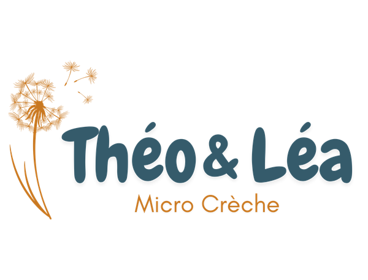

Nature & éveil
Un quotidien en lien avec la nature : jeux sensoriels, matériaux naturels et temps en extérieur pour explorer, observer et grandir en douceur.

Nous préparons un lieu doux, rassurant et naturel pour accueillir les tout-petits dans un univers chaleureux, poétique et apaisant.
Nous préparons un lieu chaleureux, paisible et inspiré par la nature, pensé pour accompagner chaque enfant dans son rythme, ses découvertes et son bien-être au quotidien.
La micro-crèche Théo & Léa accueillera jusqu'à 12 enfants de 10 semaines à 3 ans dans un environnement sain, bienveillant et stimulant, où chaque tout-petit pourra s'épanouir librement.

Un cadre de vie sain, des professionnelles passionnées et une pédagogie douce inspirée de la nature.
Un quotidien en lien avec la nature : jeux sensoriels, matériaux naturels et temps en extérieur pour explorer, observer et grandir en douceur.
Une présence attentive, des gestes doux et une communication respectueuse pour que chaque enfant se sente en sécurité et pleinement accueilli.
Chaque enfant évolue à son propre rythme. Sommeil, repas, activités… tout est adapté à ses besoins, sans précipitation.
Des repas préparés sur place à partir de produits bio, locaux et de saison. Les enfants peuvent, selon leur âge, participer à la préparation des repas
Manipuler, toucher, expérimenter… Des propositions simples et adaptées pour nourrir la curiosité et l’imaginaire.
Un cadre pensé pour garantir la sécurité physique et affective, avec des espaces adaptés et des repères rassurants.
De l'idée à l'ouverture, un projet qui se construit pas à pas, avec engagement et conviction.
2016 – 2019
Découverte du monde de la petite enfance, formation et premières expériences en tant qu’assistante maternelle. Une évidence naît : accompagner les jeunes enfants devient une vocation.
2020 – 2023
Engagement local, réflexion autour des besoins du territoire et élaboration du projet de micro-crèche. Rédaction du projet d’établissement, démarches administratives et premières étapes concrètes.
2024 – 2025
Recherche de terrain, obtention des autorisations, financement et lancement du projet. Le projet est soutenu par la CAF.
2026
Les travaux débutent dans le bourg de Notre-Dame-des-Landes. Chaque étape donne vie à un lieu pensé pour les tout-petits, à la fois chaleureux, sécurisé et en lien avec la nature.
Janvier 2027
Les portes s’ouvrent enfin pour accueillir les premiers enfants et leurs familles, dans un lieu conçu avec cœur et engagement.
Bientôt, découvrez en images notre lieu de vie conçu pour les tout-petits — chaleureux, naturel et stimulant.
Des valeurs qui guident chaque geste du quotidien, dans l’accompagnement des enfants comme dans la relation avec les familles.
Grandir au contact du vivant. Observer, toucher, expérimenter… la nature est une source d’éveil, de curiosité et d’apaisement au quotidien.
Accueillir chaque enfant avec douceur, respect et attention. Créer un climat sécurisant, où il peut être lui-même et évoluer en confiance.
Construire une relation de confiance, basée sur l’échange, l’écoute et la transparence. Avancer ensemble, dans l’intérêt de l’enfant.
Prendre soin des enfants, mais aussi de leur environnement. À travers des choix responsables : alimentation bio et locale, produits sains, pratiques éco-responsables.
Vous souhaitez réserver une place pour votre enfant ? Déposez dès maintenant votre demande de pré-inscription via notre plateforme Meeko.
Pré-inscription en ligne via Meeko →